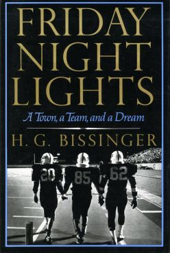

Friday Night Lights: A Town, a Team, and a Dream
Description
Friday Night Lights: A Town, a Team, and a Dream is a 1990 non-fiction book written by H. G. Bissinger. The book follows the story of the 1988 Permian High School Panthers football team from Odessa, Texas, as they made a run towards the Texas state championship. While originally intended to be a Hoosiers-type chronicle of high school sports holding together a small town, the book ended up being critical of life in the town of Odessa. It was later adapted for television and film.
Insprition
Bissinger was a journalist for The Philadelphia Inquirer when he was selected as a Harvard Nieman Fellow. It was while he was at Harvard that the idea to write a book focused upon the role high school football plays within American society, in particular rural society, took hold. Bissinger returned to The Inquirer briefly, received a Pulitzer Prize, and then took off in search of a community for which high school football was paramount. He settled on Odessa, Texas. Permian High School and its football team, the Permian Panthers, had a substantial, rich history of winning in Texas' 4A and 5A division, having won championships in 1965, 1972, 1980, and 1984. Bissinger moved his family to Odessa and spent the entire 1988 football season with the Permian Panther players, their families, their coaches, and even many of the townspeople in an effort to understand the town and its football-mad culture.
Characters
"Boobie" Miles– Star fullback for Odessa high heading into the 1988 season. The previous season he had rushed for 1,385 yards and showed flashes of brilliance. This season would be the season for him to shine and lead the team to a Texas state championship. Boobie was being heavily recruited by major college football programs such as Nebraska, Oklahoma, Arkansas, Texas A&M and USC and had professional football aspirations before suffering a knee injury in the preseason. He would never recover 100% and eventually quit the team in a rage.
Mike Winchell- the starting quarterback for the Panthers. He is portrayed by Bissinger as a boy who is mostly level-headed, but prone to nerves. His play is unspectacular but effective. He feels a lot of pressure from the town and peers alike.
Brian Chavez-A very intelligent player. He is valedictorian of his class and attends Harvard University after graduating from Permian. He is a tight end and defensive lineman. He is mostly seen as an example of the good in Odessa, a diamond among rocks.
Ivory Christian- a Linebacker for the Panthers. A punishing hitter with excellent reflexes and athleticism, Christian is a religious person. He struggles to enjoy playing football, realizing that there should be more to life and spends much of his time in thought. He is the only senior player from the 1988 Panther football team to receive a Division I football scholarship, attending Texas Christian University.
Don Billingsley- a Permian halfback who frequently finds himself in trouble with the coaches. His father is a local legend for being a star player for Permian in the late 1960s, though Don is known more for his off the field activities, which at the time included drinking, fighting, and womanizing.
Jerrod McDougal- a Permian offensive tackle, who has sacrificed a lot to become varsity for Permian and, at 5'9", knows he is too small to play at the college level, so practices several times a day to bring himself to an advantage
Gary Gaines-the head coach for Permian. A bright football mind who constantly deals with the pressures from the fans, the booster club, and the lofty expectations of being head coach for Permian.
Summary
In the 5A playoff semifinals, Permian meets Dallas Carter Cowboys, a predominantly black team. In a hard fought game in the rain at Memorial Stadium in Austin, the Panthers are defeated 14–9. Dallas Carter, led by future Miami Hurricanes and New York Giants linebacker Jessie Armstead, goes on to win the state championship, but faced severe penalties for their grade tampering, giving the state championship to Judson High School.

Author : H. G. Bissinger
Country : United States
Language : English
Publisher : Addison-Wesley
Publication date: 1990
Followed by A Prayer for the City (1998)